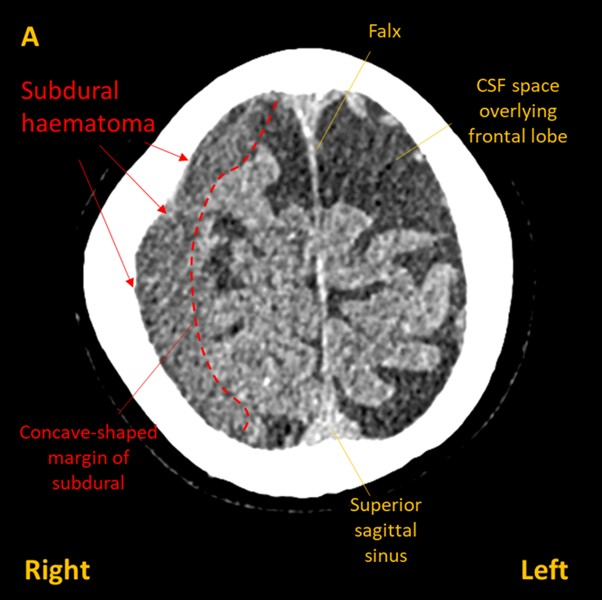
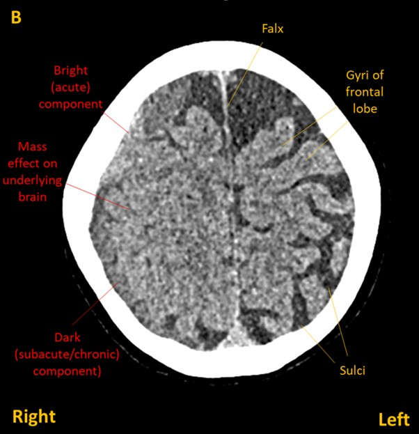

Case 10. Hand spasms
Outcome
A CT brain showed and right frontoparietal subdural haematoma (images A&B) with a small amount of midline shift (C).


The case was discussed with the neurosurgery team, who recommended conservative management - painkillers, clinical monitoring, and with serial imaging at intervals to ensure no progression. The patient was admitted for several days of observation.
The neurology team prescribed levetiracetam, which led to complete disappearance of the seizures. The seizures were considered to be acute symptomatic seizures provoked by the acute blood, rather than epilepsy - a chronic condition with recurrent, unprovoked seizures - so the intention was to treat during this stage, and consider withdrawal of the medication after the acute phase assuming no further events.
The headache gradually resolved over the coming days. After a few days in hospital the patient was discharged with no further events.
Imaging soon after discharge showed stable appearances. The neurosurgeons advised no further imaging was required as long as the symptoms remained stable - which they did.
Final diagnosisAcute symptomatic left-sided focal motor seizures and headache due to right-sided post-traumatic subdural haematoma - with a good clinical outcome following non-operative treatment.
Key pointsReturn to Cases